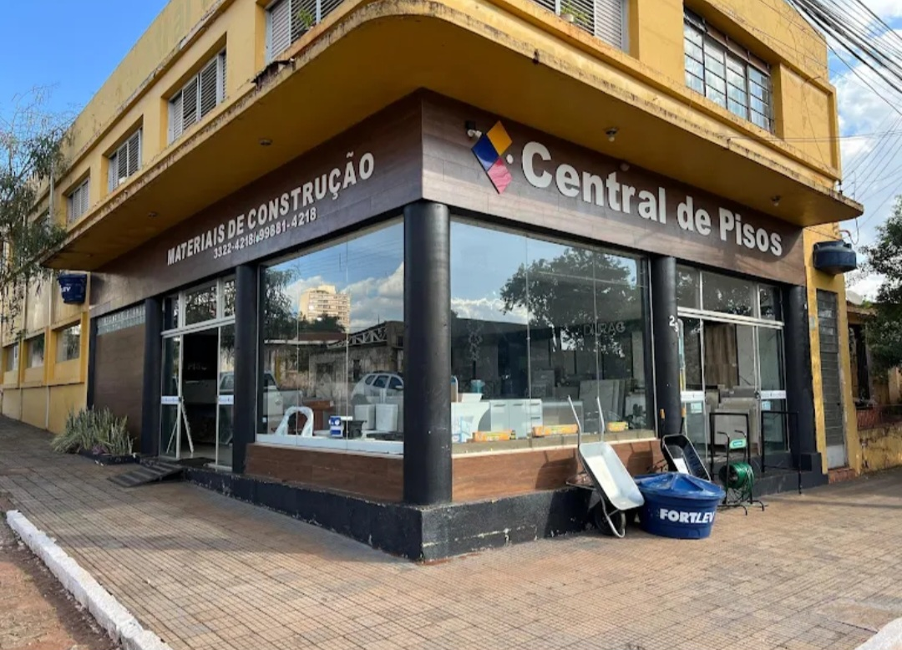
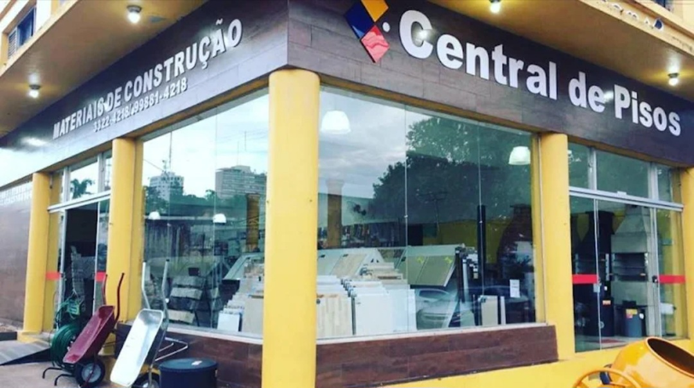
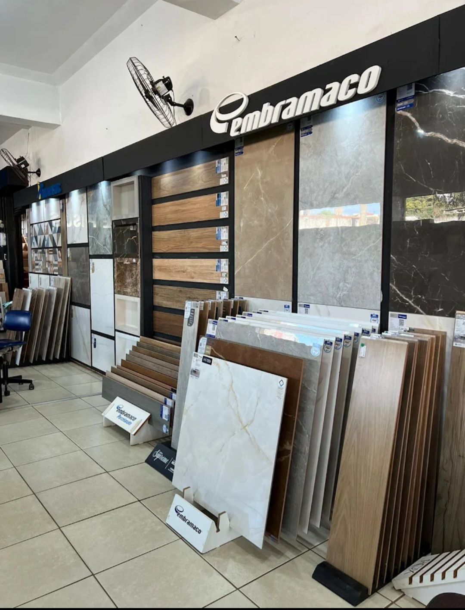
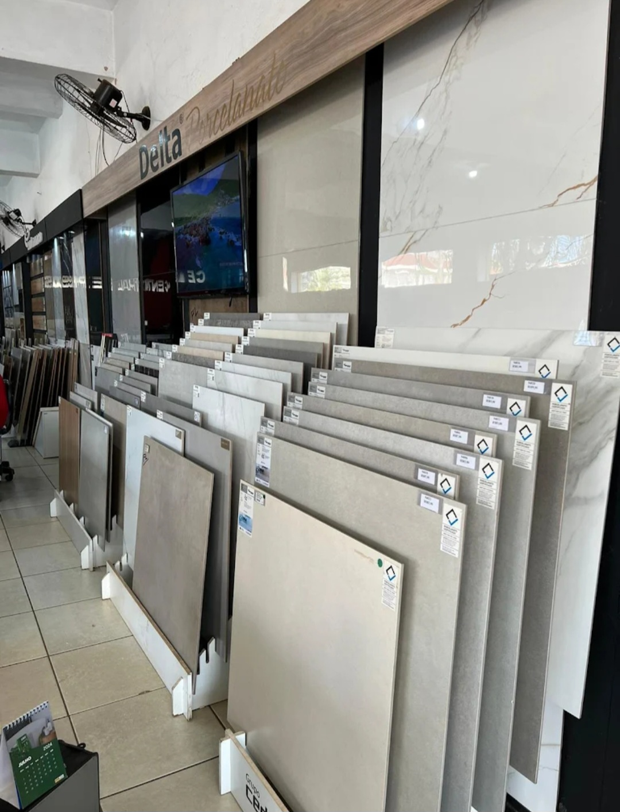
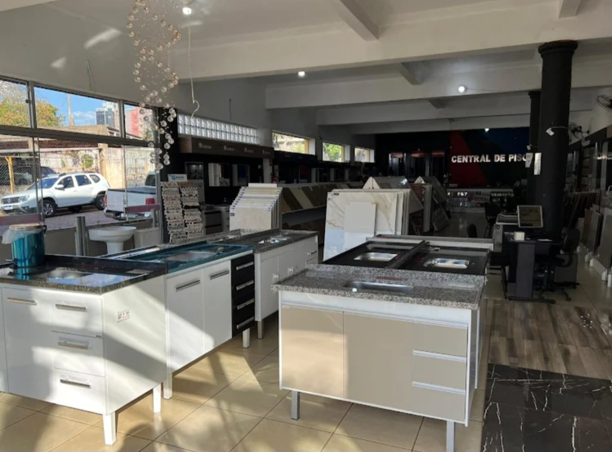

Especialista em pisos e acabamentos • Ourinhos - SP
A Central de Pisos é referência em Ourinhos quando o assunto é qualidade, beleza e durabilidade em pisos, porcelanatos e acabamentos.
Trabalhando com produtos selecionados e as melhores marcas do mercado, a empresa oferece soluções completas para construção e reforma, garantindo sofisticação e segurança para seu ambiente.
Seja para sua casa ou empresa, a Central de Pisos entrega beleza para seu espaço, segurança para sua família e economia para seu bolso.
Endereço: Av. Jacinto Ferreira de Sá, 292
Cidade: Ourinhos - SP
Falar no WhatsApp Ligar✔ Pisos e porcelanatos ✔ Revestimentos ✔ Acabamentos em geral ✔ Esquadrias ✔ Kits para banheiro ✔ Torneiras e acessórios ✔ Bacias sanitárias ✔ Itens para construção e reforma ✔ Soluções completas para ambientes



